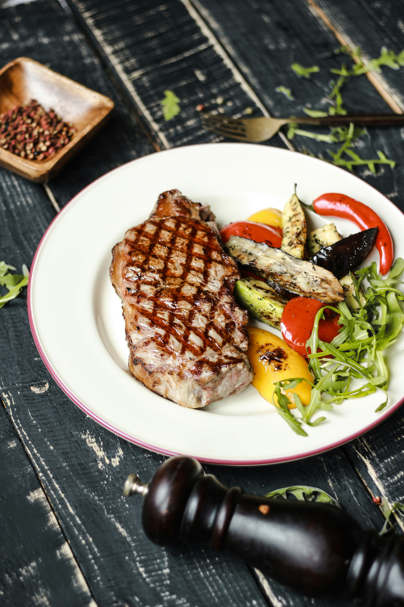

Bistec a la plancha
Rápido, jugoso y delicioso

Ingredientes
2 bistecs
Sal y pimienta al gusto
2 cucharadas de aceite
Preparación
Sazonar la carne con sal y pimienta.
Calentar la plancha con aceite y cocinar 3-4 minutos por lado.
Reposar 2 minutos y servir.
← Volver a Carnes